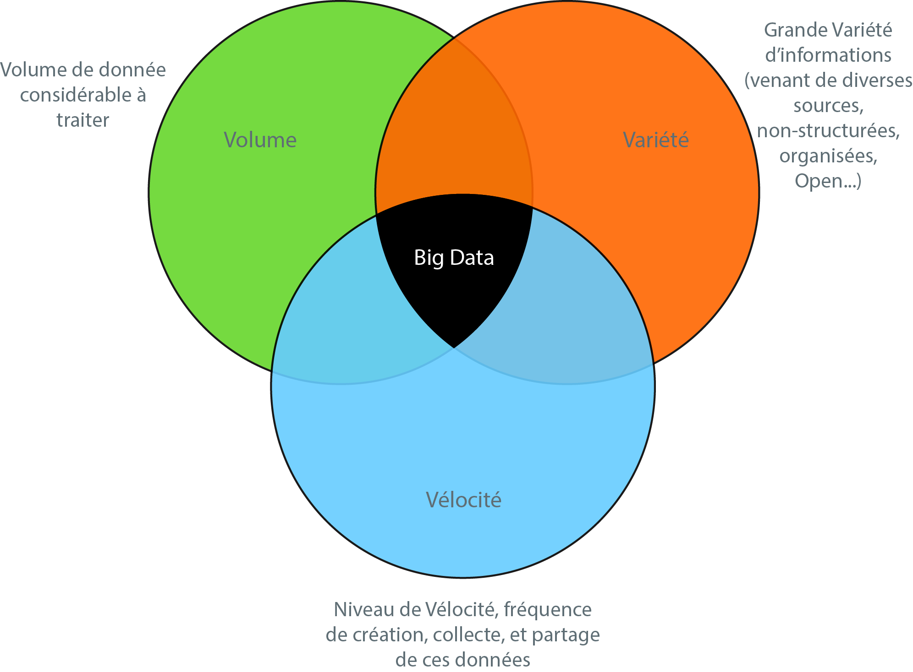

Généralités sur le Big Data
Qu'est-ce que c'est ?
Créé par David RIGAUX, Mehdi DALAA, Mandry MBUNDU, Maxime LUNDQUIST - CPI1 C2
2015-2016
Sommaire
| 1. | Historiquement comment est-on arrivé au Big Data |
| 2. | Définition |
| 3. | Domaines d'application |
| 4. | Outils informatiques et outils mathématiques pour le Big Data |
Historiquement comment est-on arrivé au Big Data
Définition
Big Data = Mégadonnées, grosses données ou données massives
Types de données
- Messages que nous nous envoyons
- Vidéos que nous publions
- Informations climatiques
- Signaux GPS
- Enregistrements transactionneles d'achats en ligne
- Et bien encore
Les 3 V
Un quatrième V ?
Certains caractérisent le Big Data avec un quatrième V qui est la Valeur
Domaines d'application
Outils informatiques et outils mathématiques pour le Big Data
Les outils informatiques
Cloud Computing = L'exploitation de la puissance de stockage de serveurs informatiques distants
Big Data et Cloud Computing, deux concepts liés
Big Data
- Gestion et Stockage de données (Data Storage)
- Nettoyage des données (Data Cleaning)
- Exploration de données (Data Mining)
- Analyse de données (Data Analysis)
- Visualisation de données (Data Visualisation)
Gestion et Stockage de données (Data Storage)


Nettoyage des données (Data Cleaning)

Exploration de données (Data Mining)


Analyse de données (Data Analysis)
Visualisation de données (Data Visualisation)

Les outils mathématiques
Géométrie
Trouver le bon espace ou un modèle de déformations
Statistique
Estimer la distance géodésique
Théorie des graphes
Estimation de la distance en trouvant les "chemins les plus courts" entre les points
Optimisation
Calculer la distance minimale
Clustering (ou partitionnement de données)
Trouver des groupes similaires au sens de la distance
Statistique
Étudier la variabilité, plans d’expérience dynamiques, numériques
Apprentissage
Prévoir l’appartenance à un groupe, apprentissage renforcé
Probabilités
Analyse de graphes, matrices aléatoires, chaînes de Markov…